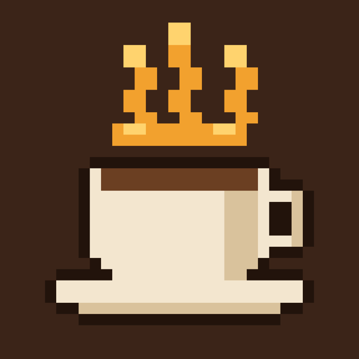

Pixel Chess Café
Cozy checkmate stories, for iPhone and iPad.
Come in, come in. There's a table by the window and a puzzle waiting. Pixel Chess Café is a cozy chess-puzzle game about finding the checkmate. Agathe runs the café and tells the stories her great-aunt kept in a biscuit tin, each one a run of hand-picked mates from a single move to three.
Story books
A free first book that teaches as it goes. The Full Edition adds the rest, now and to come.
The Back Table
Thousands of mates by depth or by pattern: smothered, Anastasia, back rank and more.
A daily puzzle
The same for everyone, on your home screen too.
No penalties
Stray moves show you why and rewind. Free, unlimited hints. Nothing to lose.
For everyone
Full VoiceOver support, Reduce Motion, and the silent switch respected.
Nothing collected
No ads, no accounts, no tracking. Data Not Collected.
Support
Write to hello@vijaysharma.ca. A real person reads every note.
Common questions
I bought the Full Edition on another device. Open Settings in the café and tap Restore purchase. Family Sharing is on, so anyone in your family group gets the books too.
What do I get with the Full Edition? Book 2 now, plus any future books at no extra cost. One purchase, once. No ads, ever.
A move I'm sure is right was rejected. In Relaxed mode the café only accepts moves that keep the mate forced; it shows you the escape and rewinds. If you think a puzzle is wrong, send us the book, chapter and puzzle number.
Can I turn off sounds or the vibration? Yes: Settings, under "At the table". The café also respects your silent switch.
The reminder stopped. If several reminders go by without a visit, the café quietly stops sending them. Turn it back on any time in Settings.
Credits
Puzzles from the Lichess puzzle database (CC0). Sound effects from CC0 libraries and the café's own foley. Pixel type: Silkscreen (SIL Open Font License). All characters and stories are fiction.